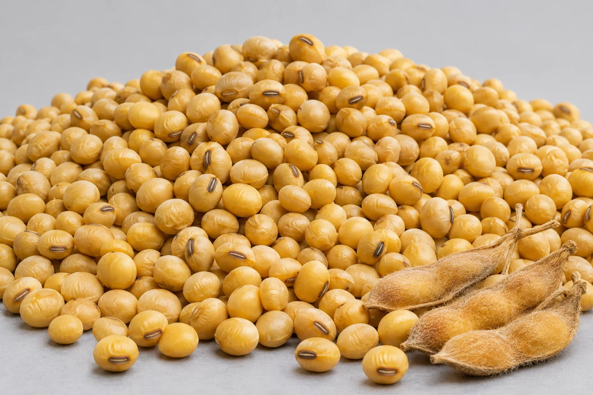

01 / Oilseeds
Brazilian Soybeans
GMO soybeans for bulk commodity sourcing, feed, and processing supply chains.
Explore soybeans
AgroExpress / Brazilian agriculture
From our family farms to world ports. Soybeans and corn, supplied with quality, integrity, and reliability.
From Brazilian soil
Dependable supply for international buyers, backed by our farms and a trusted network of Brazilian growers.

GMO soybeans for bulk commodity sourcing, feed, and processing supply chains.
Explore soybeans
GMO corn with flexible packaging and delivery options for international markets.
Explore corn Our roots run deep.
Our roots run deep.
A family tradition. A global outlook.
AgroExpress is a third-generation Brazilian farming company. What began with family roots in soybeans and corn has grown into an independent agrobusiness connecting Brazilian agriculture with global markets.
Today, we own and operate three productive farms alongside the larger family-owned farmland, combining generations of experience with professional export infrastructure.
Meet AgroExpressWhy choose AgroExpress
Deep farming roots in Brazilian soil, with quality and integrity at the heart of our work.
Brazilian export licenses and international trade capabilities for Any Safe World Port (ASWP).
Bulk or bagged crops, FOB or CIF options, and grower partnerships for large and future orders.
From first conversation to shipment
Tell us the crop, quantity, destination port, and preferred shipment window.
Discuss specifications, packaging, availability, and delivery terms with our team.
Confirm the agreed commercial terms and coordinate your export requirements.
Your next shipment starts here
Share your product, volume, and destination. We'll take it from there.